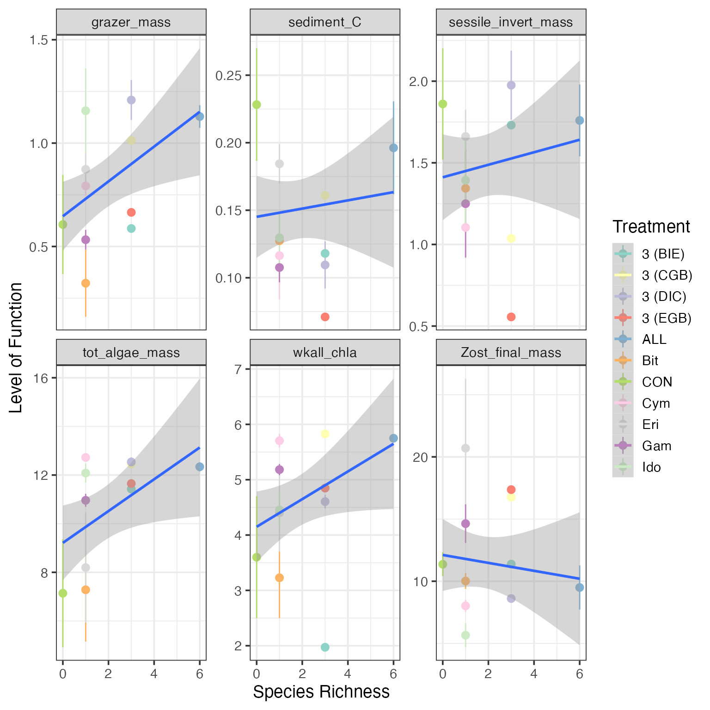
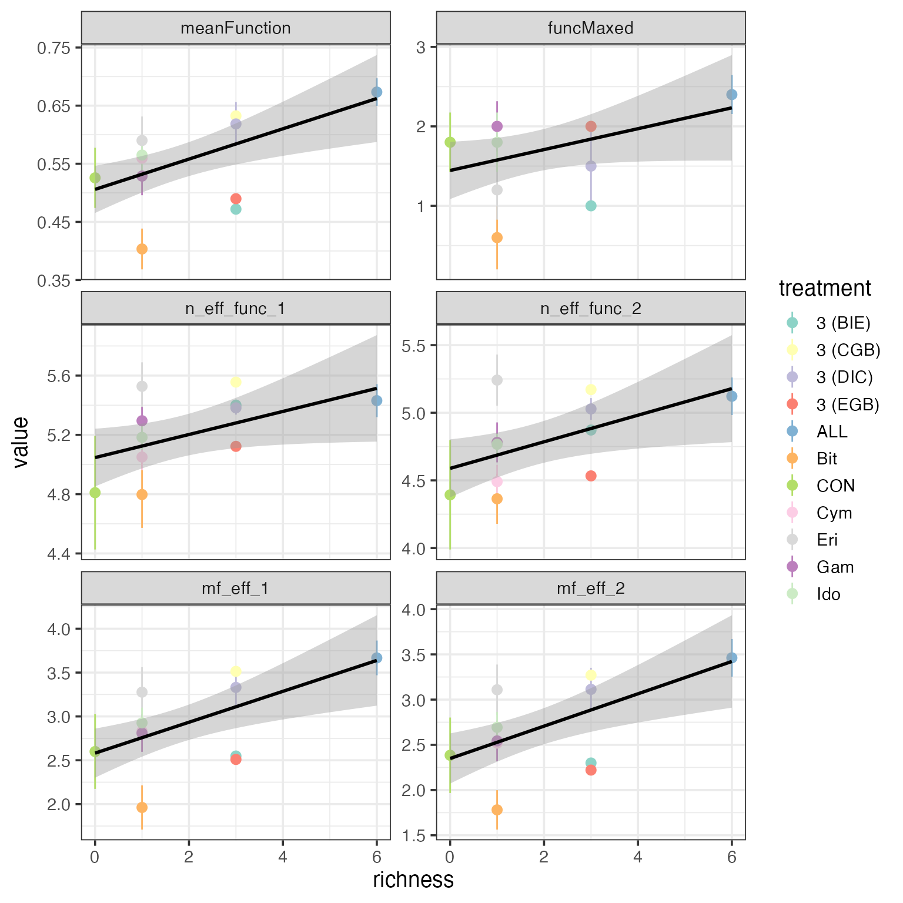
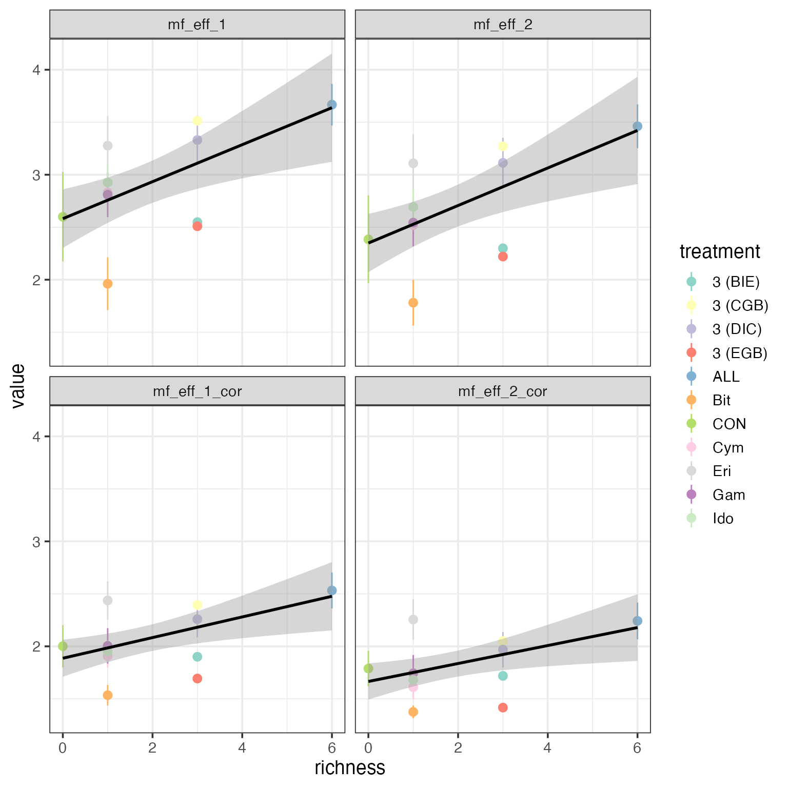

vignettes/multifunc_eff_num_func.Rmd
multifunc_eff_num_func.RmdTo see how effective number of functions and effective
multifunctionality can be used in practice, we have added functions for
both into the multifunc package in R. To see how these
metrics can be used, consider the example of Duffy et al. 2003. In this
experiment, Duffy and colleagues sought to examine how biodiversity of
grazers influences multiple different ecosystem functions in seagrass
ecosystems. Using this framework, we standardized and reflected them as
per how Duffy et al. discuss their results. We then compare average
functional performance, effective multifunctionality with q = 1 and 2,
and the same accommodating for correlations between functions.
First, let’s load up
library(multifunc)
library(dplyr)
library(tidyr)
library(forcats)
library(ggplot2)
theme_set(theme_bw(base_size = 14))
data("duffy_2003")
duffyAllVars <- qw(grazer_mass,wkall_chla,tot_algae_mass,
Zost_final_mass,sessile_invert_mass,sediment_C)
#re-normalize so that everything is on the same
#sign-scale (e.g. the maximum level of a function is the "best" function)
#and the dataset is cleaner
duffy <- duffy_2003 %>%
dplyr::select(id, treatment,
diversity, all_of(duffyAllVars)) %>%
dplyr::mutate(wkall_chla = -1*wkall_chla +
max(wkall_chla, na.rm=T),
tot_algae_mass = -1*tot_algae_mass +
max(tot_algae_mass, na.rm=T))
# Plot functions we want
duffy %>%
select(treatment, diversity, all_of(duffyAllVars)) %>%
pivot_longer(all_of(duffyAllVars)) %>%
ggplot(aes(x = diversity, y = value,
color = treatment)) +
stat_summary(fun.data = mean_se) +
stat_smooth(method = "lm", aes(group = name)) +
facet_wrap(vars(name), scale = "free_y") +
scale_color_brewer(palette = "Set3") +
labs(y = "Level of Function", x = "Species Richness",
color = "Treatment")
From this, we can standardize functions and calculate A, the mean multifunctionality.
#first, mean multifunctionality
duffy <- duffy %>%
cbind(getStdAndMeanFunctions(duffy, duffyAllVars)) %>%
dplyr::rename(richness=diversity)
duffy <-duffy %>%
getFuncsMaxed(duffyAllVars,
threshmin=0.8, threshmax=0.8)We can calculate effective number of functions with
multifunc::eff_num_func(), which has arguments for
different levels of q, standardizing by number of functions, and the use
of distance matrices and tau. Let’s calculate the effective number of
functions for q = 1 and q = 2. We can then multiple both by the average
to get effective multifunctionality.
duffyAllVars.std <- paste0(duffyAllVars, ".std")
#now effective number of functions
duffy <- duffy %>%
mutate(n_eff_func_1 = eff_num_func(., duffyAllVars.std, q = 1),
n_eff_func_2 = eff_num_func(., duffyAllVars.std, q = 2),
mf_eff_1 = n_eff_func_1 * meanFunction,
mf_eff_2 = n_eff_func_2 * meanFunction
)With these metrics in hand, how different do either effective number of functions or effective multifunctionality look from previous approaches?
duffy %>%
select(id, treatment, richness,
meanFunction, funcMaxed,
n_eff_func_1, n_eff_func_2,
mf_eff_1, mf_eff_2) %>%
pivot_longer(cols = c(meanFunction:mf_eff_2)) %>%
mutate(name = fct_inorder(name)) %>%
#now a plot
ggplot(aes(x = richness, y = value,
color = treatment)) +
stat_summary(fun.data = mean_se) +
stat_smooth(method = "lm", color = "black") +
facet_wrap(vars(name), ncol = 2, scale = "free_y") +
scale_color_brewer(palette = "Set3") 
Comparing across all metrics, they produce similar results - as one would hope. Note, however, that the drop-down in average for some of the intermediate diversity treatments is not as strong for effective number of functions. While we see it’s influence again in effective multifunctionality, note that some of the treatments have actually reversed in rank order. This is even more apparent when comparing to number of functions > 0.8, which is also flatter. These observations that the story described from the effective multifunctionality approaches are similar - at least in this data set - to those told by the averaging approach. However, they are subtly different in some key elements, which could have consequences for interpretation, and they have a much more solid grounding in Ecological theory.
Further, the effective multifunctionality results broadly reproduce the qualitative conclusions of Duffy et al. (2003). They reveal, however, that in lower diversity assemblages, there is less of a drop in effective number of functions. The reason for the strong Biodiversity-Multifunctionality results derive from three observations. First, some lower diversity treatments have low average levels of function despite diversity having more mild impact on evenness of function. Second, the control treatment, while maintaining a high level of function, has a much lower effective number of functions. Thus, the skew in functional dominance in the control drives down effective multifunctionality in this treatment at 0 richness. Third, some monocultures have both low mean and low effective number of functions, further strengthening the effective multifunctionality results beyond what is seen in either the mean, threshold, or number of effective functions results alone.
We can also incorporate correlation between functions to calculate effective number of functions controlling for some functions being driven by the same underlying unmeasured function - this producing lower scores for effective number of functions than would appear from our initial approach.
To begin with, we will need a distance matrix based on correlations.
For that, we have multifunc::cor_dist() which calculates a
correlation matrix, subtracts it from 1 and divides by two to make a
distance matrix.
With the approach outlined for effective multifunctionality, we need
to also consider a cutoff in similarity, \(\tau\). As a default choice for functions,
we use \(d_{mean}\), the average of the
matrix weighted by the total frequency of function. To see what \(d_{mean}\) would be, we can use
multifunc::dmean() and then either use that in future
functions, or recognize that functions default to calculating \(d_{mean}\). Other choices could be \(d_{max}\) or \(d_{min}\) - the minimum non-zero value of
the distance matrix which can be calculated with
multfunc::dmin() in the same way we use
dmean() below.
We can then get the effective multifunctionality for q = 1 and q = 2
adjusting for correlation between species. Here we will use
multifunc::getMF_eff() so that we do not have to calculate
effective number of functions and multiply by the mean. We can though,
if we would like, using n_eff_func() as before with new
arguments as below.
duffy <- duffy %>%
mutate(mf_eff_1_cor = getMF_eff(., duffyAllVars, q = 1,
D = D, tau = tau),
mf_eff_2_cor = getMF_eff(., duffyAllVars, q = 2,
D = D, tau = tau)
)Let’s then evaluate the consequences of incorporating correlation.
duffy %>%
select(id, treatment, richness,
mf_eff_1, mf_eff_2,
mf_eff_1_cor, mf_eff_2_cor) %>%
pivot_longer(cols = c(mf_eff_1:mf_eff_2_cor)) %>%
mutate(name = fct_inorder(name)) %>%
#now a plot
ggplot(aes(x = richness, y = value,
color = treatment)) +
stat_summary(fun.data = mean_se) +
stat_smooth(method = "lm", color = "black") +
facet_wrap(vars(name), ncol = 2) +
scale_color_brewer(palette = "Set3") 
Qualitatively, the results do not appear to change very much, although values incorporating correlations are lower, as expected. However, as fewer unique underlying “functions” are being affected, the results are somewhat weaker in slope.